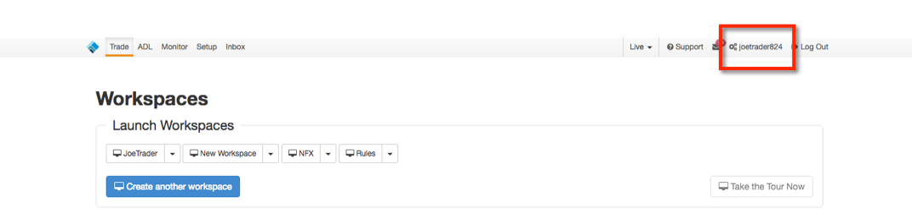
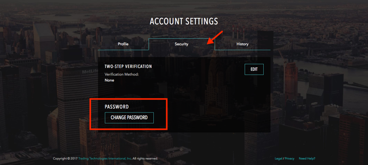
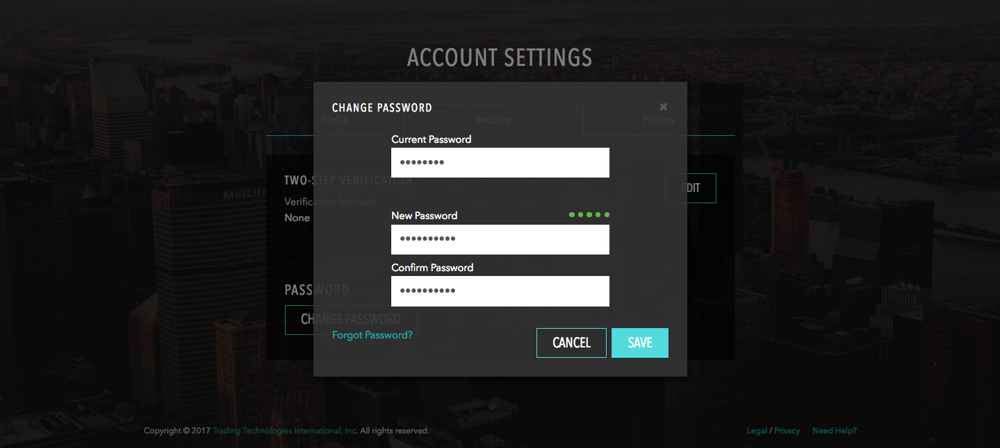

To change your password:
Click your account username in the title bar to open the Account Settings page.

On the Account Settings page, click the Security tab and click CHANGE PASSWORD.

Enter your current and new passwords and click SAVE.
